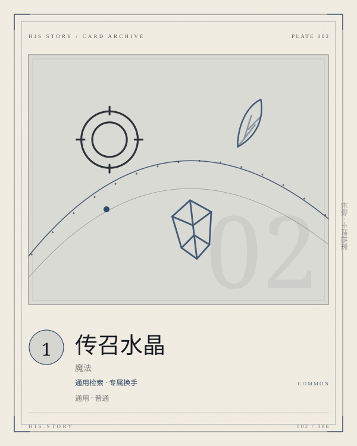

PLATE 002 / 086SUMMON-CRYSTAL
卡面为程序生成的概念图版；卡文与规则以本页正文为准。
CARD / GENERAL / 魔法
传召水晶
通用检索 · 专属换手
通用普通魔法COST 1检索专属
选择手牌中的一张专属魔法，将其洗入卡组，抽一张对应英雄的专属牌，若可能，抽取英雄。将一张「传召水晶」加入卡组。
- COST
- 1
- C / A / D
- —
- GROUP
- 通用魔法
- LIMIT
- 4构筑上限
归属 通用 · 通用 · 通用 · 普通。上限字段为「4」；原典未列上限的卡，页面不替它补。
关联 LINKS · 出边 + 入边 · 同目标去重
关联不是规则联动。它记录这张卡在设计与叙事上依赖谁、被谁依赖；跨阵营的边只标「对照」。
检索
勇气
把一张用不上的专属换成诺维安想要的那一张
检索
苍白之月
莉莉亚的觉醒件也可以被它换出来
检索
陷阱
莫伊卡的触发牌，早一回合到手就早一回合埋下
同族
英雄水晶
同为自生成水晶，一个找英雄，一个找专属
词条 KEYWORDS IN TEXT
卡文没有命中已归档的规则词条。
ARCHIVIST'S NOTE
肥鱼碎碎念
一费，把手牌里的一张专属洗回卡组，再抽一张「对应英雄的专属」。注意动词：洗入是移动，不是生成；所以它不增加卡组里的专属总量，只是把一张现在用不上的专属，换成一张现在更想用的。
它和英雄水晶构成通用池的「双水晶」：一个找英雄，一个找专属。传召水晶更便宜，但需要先有专属在手；起手抽到它而没抽到专属时会很尴尬——这也是它只要一费的原因。
原典没有说明：如果卡组里没有对应英雄，或者对应的专属已经全部用完，这次抽取会怎样。我倾向于按「若可能」处理为抽一张普通牌，但这条需要作者裁定。
—— 归档者，读这张卡的时候